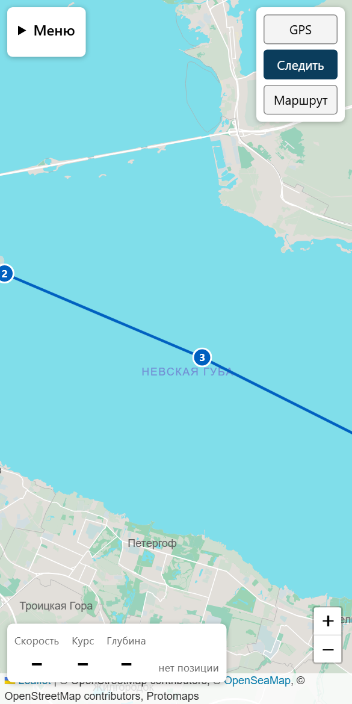

Карты Ладоги, Невы и Финского залива в телефоне, без интернета в море
Маршруты, треки и предупреждение о мелях по осадке вашей лодки. После проверки подписки работает 30 дней без связи.
Записаться со скидкой 50%Открыть плоттерМаршруты, треки и предупреждение о мелях по осадке вашей лодки. После проверки подписки работает 30 дней без связи.
Записаться со скидкой 50%Открыть плоттер
Android-приложение и веб-версия для любого телефона. Не заменяет официальные навигационные пособия.
Оставьте контакт: напишем, когда откроем подписку, и дадим скидку 50% на первый сезон. Ничего не списываем.